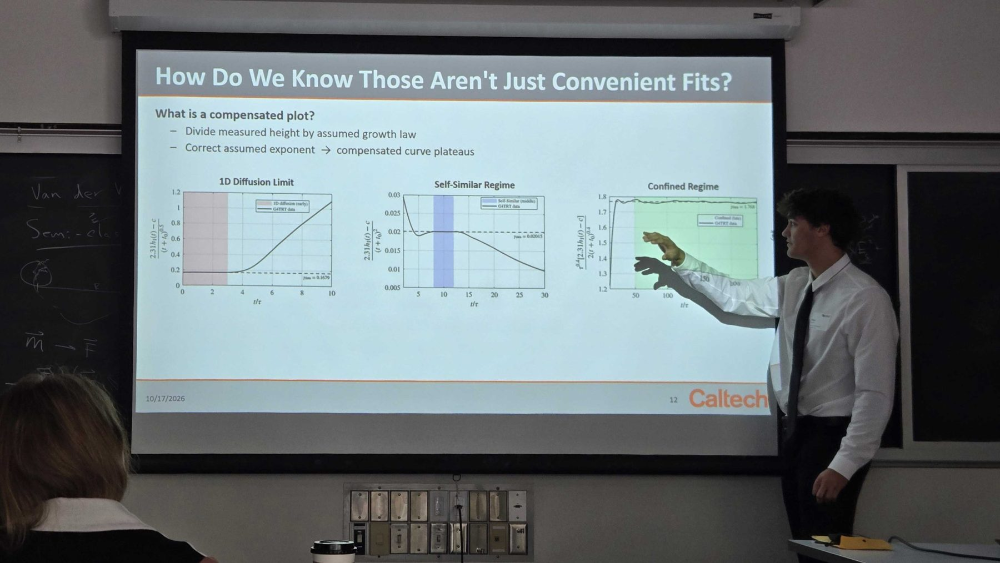

As a Caltech Perpall SURF Fellow in Professor Guillaume Blanquart’s lab, I spent the summer studying Rayleigh–Taylor turbulence—mixing that develops when a heavier fluid sits above a lighter one. I was particularly interested in how the flow changes when the growing turbulent layer becomes confined by its geometry.
Using numerical simulations on the Stampede3 supercomputer, I analyzed growth laws, resolution and reproducibility, and internal statistics including mixing, kinetic energy, and anisotropy. A central result was that statistically stationary simulations can reproduce key statistics of the confined, time-growing flow, even though confined and self-similar turbulence are distinct regimes.
I presented the work at Caltech’s SURF Seminar Day and was selected as a finalist in the Doris S. Perpall speaking competition. I’m also presenting the research at the APS Division of Fluid Dynamics meeting this fall. The project combined computation, fluid mechanics, and communicating complicated physics clearly.